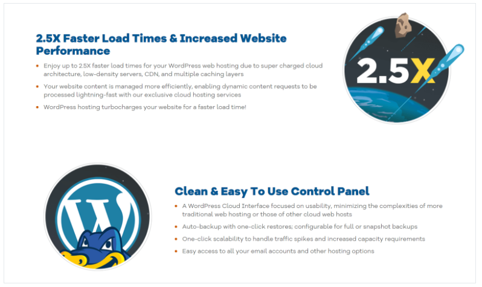
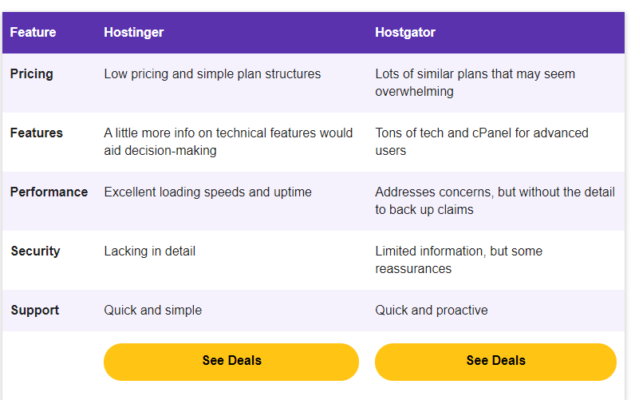

Hostinger’s Cheap Plans Are Tough for HostGator to Beat
For shared hosting, Hostinger has three low-priced p you’ll pay pocket change for hosting a site here. The Single plan lets you host one website, while Premium and Business provide additional features and functionality.
The top plan, Business, includes 200 GB of SSD storage, unlimited bandwidth allowance, and databases. You’ll also get a free domain, free SSL, and free daily backups. Unless you are on an extremely tight budget, this plan is my recommended pick for a good balance of features and pricing.
HostGator’s also known for low pricing, but its plans are slightly more expensive than Hostinger’s. HostGator has three shared hosting plans – Hatchling, Baby, and Business – and the big differentiator of HostGator vs Hostinger pricing is unmetered bandwidth and storage with all its shared hosting plans. HostGator is generous at lower price levels, with SSL and backups available to all customers without charge.
Both hosts offer WordPress hosting and cloud hosting if you need a more advanced solution. Free domains are available depending on the plan you choose, and you can register more domains at both hosts via your dashboard.
Hostinger Offers a Proprietary Control Panel
If you’re new to hosting, you might be looking for one-click WordPress installers and website builders. Both HostGator and Hostinger will meet your requirements there.
But here’s a big difference. HostGator uses cPanel, and Hostinger doesn’t. This might matter if you want something more advanced from your hosting plan.
cPanel is a web hosting control panel that lets you after the technical side of your hosting account yourself. Through cPanel, HostGator has support for practically every programming language and feature you could dream of. CGI, Ruby, and Python right down to instant installers for forums and guestbooks. If you’re used to cPanel, the learning curve after you move hosts will be non-existent, and its Business plan is ready for e-commerce out of the box.
Hostinger has a custom panel called hPanel, which always requires a little more getting used to when you move from another host. However, when my colleague tested Hostinger’s control panel, he found it very easy to use. cPanel does offer access to more features, but most of us won’t be using most of them, so it can feel a little cluttered. In general, Hostinger’s list of features is great for beginners – the plans provide everything you need, and there are also a few perks, including tools to boost your performance.
Hostinger’s Uptime Data Leaves HostGator in the Dust
Shared hosting slices a server into individual accounts; they’re separate, but share the same underlying server resources between them. There are sometimes performance problems on shared hosting when one site starts to consume resources that its neighbors need.
There’s no way of guarding against this, but HostGator does refer to “low-density servers” on WordPress plans. I’m inferring that it means it limits the number of customers per server, and if so, that should help with your site’s speed and performance. Unfortunately, there’s no real detail to go on.
Hostinger uses cloud-based technology and “3x optimized WordPress,” but it doesn’t explain what the “3x” stands for, or how it uses the cloud. So it sounds good, but it’s difficult to judge whether it’s going to protect you against performance problems based on this alone.
HostGator says it loads pages “up to 2x faster” thanks to “premium hardware” and caching. In truth, the plugins you run on your own website are likely to impact performance more dramatically than the server hardware, but again — let’s go with the positives here. Hostinger’s servers all use SSD storage, which is promising; solid-state drives usually result in marginally faster data retrieval.
On the Hostinger website, you can also see uptime stats for the last week, and a summary stat for the last 30 days. It even publishes its latest episode of downtime. HostGator doesn’t do this, but remember; it will likely share a data center with dozens of other Endurance International Group brands, so it may not even be possible to say what its uptime looks like.
HostGator’s Limited Security Info Beats Hostinger’s Lack of Detail
The weak point on any server is the software that runs on it, from the operating system to the plugins the customer has installed on their CMS. Hosts are getting better at blocking threats and proactively updating software that they see as outdated.
But on shared hosting, malware detection and removal is down to you, as is account security, directory permissions, and password hygiene. If you intend to take payments on our website, keep in mind whether the plan you’ve chosen gives you free SSL — it could make life a lot easier. Beyond the basics, HostGator monitors its servers 24/7/365. Customers who use their Hostgator account to create email mailboxes benefit from SpamAssassin built-in. In its knowledge base, HostGator also says that it has methods in place to protect against DDoS, has a well-fortified firewall, and uses data centers that are physically secure.
When I Googled ‘Hostinger security’, I found a blog post about a recent ‘security incident’ when customer details were stolen. In comparison, details of its security for customers appear as the second hit in Google, and the article is almost three years old. Depending on your attitude to risk, you might see its new-found security awareness as a positive, or you might wonder why Hostinger didn’t have a cybersecurity team until last year.
Hostinger’s Email Support Is Good, But HostGator Is Easier to Contact
HostGator has a large, well-written, and well-organized knowledge base as part of its support offering. Hostinger has a smaller one that is difficult to navigate, but still valuable.
I tried both Hostinger and Hostgator’s support late on a weekend in my timezone (London/ GMT), which is early in the morning on the US West Coast.
HostGator allocated someone to answer my query within a minute. After initially saying they didn’t know how many customers they have, they asked around in the team and came back to me with a reply a couple of minutes later, which I was pretty impressed by.
I tested Hostinger’s email support via the form on its website. This is actually the front-end to a ticketing system. I got a reply within 10 minutes. Unfortunately, the operator misunderstood my question in this case, but I was pleasantly surprised by how quickly she emailed me back.
Hostinger vs HostGator: There’s a Clear Winner
HostGator isn’t a bad web host, but for shared hosting, you really can’t do better than Hostinger. Hostinger’s shared hosting plans are not only extremely affordable – they also provide the best performance I’ve ever seen from a shared hosting service.
It’s easy to see why Hostinger made it to our list of the top web hosting services for 2021, while HostGator did not.
Privacy Policies: --- This privacy statement describes how to collect and use the personal information you provide on our website: . It also describes the choices available to you regarding our use of your personal information and how you can access and update this information.
Collection and Use Of Personal Information
Information Sharing
●We are not sharing any information to third parties, we only showing the affiliate programmes and users traffic diverted to Hosting Websites .
Notification Of Privacy Statement Changes
We may update this privacy statement to reflect changes to our information practices. We encourage and advise you to periodically review this page for the latest information on our privacy practices.
Disclosure
This is how we make our living To keep our website running at full capacity and to continue providing you with the most relevant content, we are partly funded by affiliate programs. This means that when you click on a link and make a purchase, we may earn a commission. Affiliate programs and affiliations include but are not limited to Hostagtor, Hostinger and others. We believe that the only way for us to grow and succeed as a website is to be the best. This means giving our visitors top quality information, reviews, recommendations, learning center, and more. We will never compromise on quality, as our credibility and that of the website mean everything to us. That’s how we earn our living. Please contact us with any questions about affiliations on this website. We’ll be more than happy to clarify or provide any additional details if necessary.